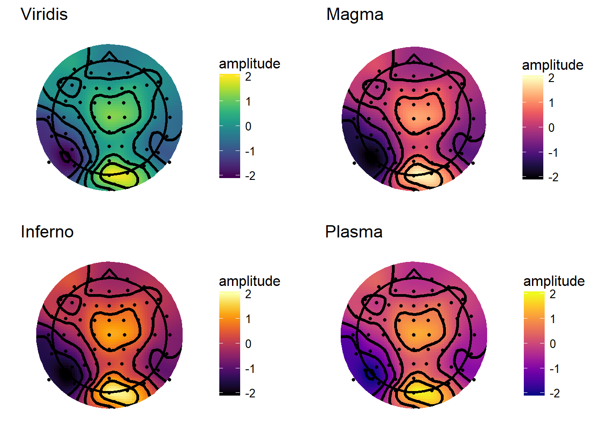

In my previous post on plotting topographies in R, ERP Visualization: Creating topographical scalp maps: part 1, I was aiming for maximum comparability with EEGLAB defaults. That meant I used the ‘jet’ colour map, which is what I’m most used to using. You may have noticed that there was no default jet colour map - I had to define one manually. While jet produces nice, punchy looking images, there are a heap of problems associated with it. I’m not going to rehash them in detail here, as there are numerous other posts all over the internet that do them all much better justice than I will, and I try to choose which wheels to reinvent wisely. If you want to read in more detail, check out “The rainbow is dead, long live the rainbow” by Matteo Niccoli, a helpful PDF summarising the whole debate over on Mathworks, and “Thinking about colors [Part 1 of 2]” by Chris Madan.
Some key points:
- Jet is not perceptually uniform. The difference between colours is not linear with increasing distance between points. It can change very quickly with small changes in value, and yet can also be very similar for relatively large differences. This can create the impression of large changes when the actual changes are small, or small changes when the actual changes are small.
- Jet is not robust to colour blindness. It’s inconsistent across its range and it can be hard figuring out which colours are high and which low.
- Jet prints badly in black and white.
If you’re still not convinced, even Matlab changed their default from ‘jet’ to ‘parula’ in version 2014b, which was news to me as I am stuck with 2012b.
Here’s the topography from the last post in all its glory:

The code that defined the colour map and applied it to the topography is:
jet.colors <- colorRampPalette(c("#00007F", "blue", "#007FFF", "cyan", "#7FFF7F", "yellow", "#FF7F00", "red", "#7F0000"))
#v4plot is the plot object
v4plot + scale_fill_gradientn(colours = jet.colors(10),
limits = c(-2,2),
guide = "colourbar",
oob = squish)The first thing that is apparent is that you can define whatever colour map you like. Second, when you’ve defined your plotting object (in this case, v4plot), you can change the colourmap simply by adding a new one to the existing plot object.
Colormap choices
So how do you go about choosing what colourmap to use? Luckily, there are a whole bunch of options out there that are already designed to solve the problems identified above.
With ggplot2, use of these various colourmaps is trivially easy. Many are already available thanks to RColorBrewer, an implementation of Cynthia Brewer’s colourmaps. Other nice colour schemes are available through the viridis package, which implements the perceptually uniform colour maps from Python’s matplotlib.
Sequential colour maps
Sequential colour maps take a single colour (approximately…) that varies smoothly between two tones. These have the advantage they show a clear linear progression from the bottom to the top of the scale. Matplotlib’s default colour maps print nicely in black and white, are robust to colour blindness, and span a good range of the palette to make differences in scale easy to see. After loading the viridis package, they can be used as below:
library(viridis)
viridisPlot <- v4plot + scale_fill_gradientn(colours = viridis(10),
limits = c(-2,2),
guide = "colourbar",
oob = squish) +
ggtitle('Viridis')
magmaPlot <- v4plot + scale_fill_gradientn(colours = viridis(10, option = "A"),
limits = c(-2,2),
guide = "colourbar",
oob = squish)+
ggtitle('Magma')
infernoPlot <- v4plot + scale_fill_gradientn(colours = viridis(10, option = "B"),
limits = c(-2,2),
guide = "colourbar",
oob = squish)+
ggtitle('Inferno')
plasmaPlot <- v4plot + scale_fill_gradientn(colours = viridis(10, option = "C"),
limits = c(-2,2),
guide = "colourbar",
oob = squish)+
ggtitle('Plasma')
grid.arrange(viridisPlot, magmaPlot, infernoPlot, plasmaPlot, ncol = 2, nrow = 2)
From a first glance, I probably like Plasma and Viridis best from these options. One thing I like about the sequential maps is that they don’t place too much emphasis on any particular point, doing a good job of conveying the smoothness of the topography and not imposing any sharp transitions. These particular colour schemes would also be good for displaying raw spectral power in time-frequency plots or topographies. Raw spectral power (i.e. power which is not baseline corrected) is all-positive, so has no natural reference point such as zero to form the center of its scale.
Diverging colour maps
Diverging colour maps use two different colours either side of a reference point, so they’re nice for showing when something is above or below some sort of important value. For example, on an ERP topography you’re probably keen to know where the amplitude is above zero and where it is below zero.
RdBuPlot <- v4plot + scale_fill_distiller(type = "div",palette = "RdBu",limits = c(-2,2),
guide = "colourbar",
oob = squish) +
ggtitle('RdBu')
PuOrPlot <- v4plot + scale_fill_distiller(type = "div",palette = "PuOr",limits = c(-2,2),
guide = "colourbar",
oob = squish) +
ggtitle('PuOr')
RdYlGnPlot <- v4plot + scale_fill_distiller(type = "div",palette = "RdYlGn",limits = c(-2,2),
guide = "colourbar",
oob = squish) +
ggtitle('RdYlGn')
PiYGPlot <- v4plot + scale_fill_distiller(type = "div",palette = "BrBG",limits = c(-2,2),
guide = "colourbar",
oob = squish) +
ggtitle('BrBG')
grid.arrange(RdBuPlot, PuOrPlot, RdYlGnPlot, PiYGPlot, ncol = 2, nrow = 2)Again, these are quite an improvement over Jet-style colour maps, and are particularly useful for showing data with a clear reference point (e.g. ERPs or baseline-corrected time-frequency plots/topographies).
MNE style maps and contours
MNE is a really comprehensive package for Python that offers many advanced tools for M/EEG analysis. Their default colourmap is the RdBu diverging map shown above. A neat trick I like on their topographies is that the contour lines change with the amplitude within each contour level; specifically, contours around amplitudes greater than or equal to zero use solid lines, while contours around amplitudes less than zero use dashed lines. That’s also simple to do in ggplot2. Note that here I also define a custom version of the “RdBu” colormap to make it a bit more punchy, like the MNE plots.
matplotlibRdBu_r <- colorRampPalette(c("#053061","#4694C4","#F6F6F6","#E7886C","#67001F"),interpolate = "spline")
v4plot <- ggplot(interpV4[interpV4$incircle,],aes(x = x, y = y, fill = amplitude))+
geom_raster()+
stat_contour(aes(z = amplitude,linetype = ..level..<0),
bins = 6,
colour = "black",
size = 1.2,
show.legend = FALSE
)+
theme_topo()+
geom_path(data = maskRing,
aes(x, y, z = NULL, fill =NULL),
colour = "white",
size = 6)+ scale_fill_gradientn(colours = matplotlibRdBu_r(10),
limits = c(-2,2),
guide = "colourbar",
oob = squish)+
geom_point(data = singleTimepoint,
aes(x,y),
size = 1)+
geom_path(data = headShape,
aes(x,y,z = NULL,fill = NULL),
size = 1)+
geom_path(data = nose,
aes(x, y, z = NULL, fill = NULL),
size = 1)+
coord_equal()
v4plotThe trick is in this code:
stat_contour(aes(z = amplitude,linetype = ..level..<0),
bins = 6,
colour = "black",
size = 1.2,
show.legend = FALSE
)stat_contour creates a new data frame internally which splits the data into bins. This new dataframe has a column “level”, which is the value of each bin edge. Columns from internally generated dataframes can be accessed using ..[column name].., so I simply check if the level is less than 0, which sets the linetype to different numbers for bins >=0 than for bins <0.